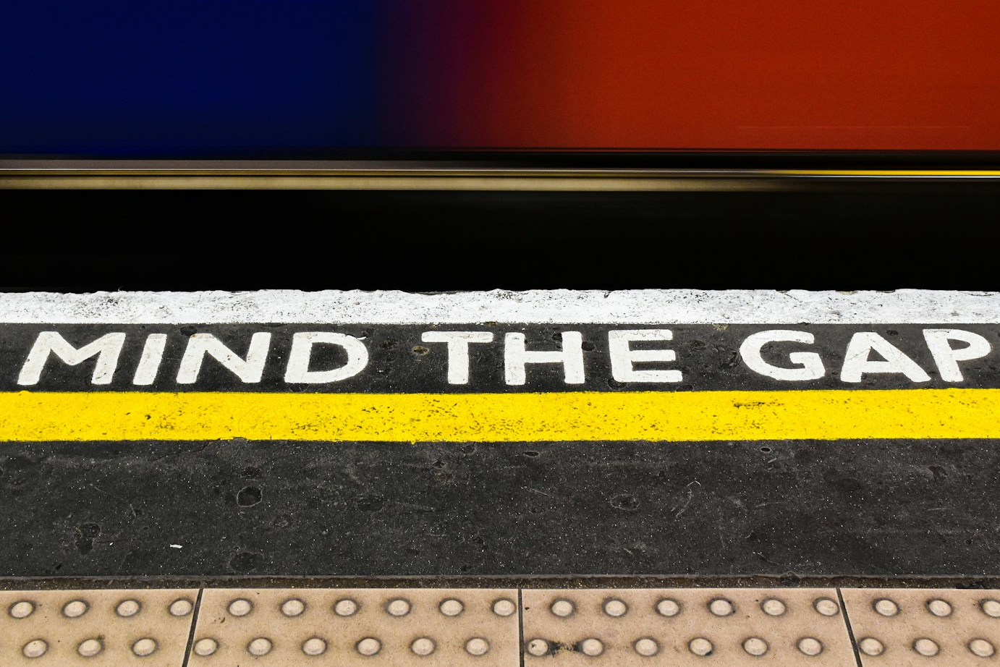

./mind_the_gap.c
127.0.0.1 - 08.03.2024 -> 13.12.2025 - 03:06 PM CET

sono passati quasi due anni dalla prima volta che ho messo piede a Londra, e sono da quasi due anni che penso a cosa scrivere ma puntualmente mi blocco.
ci sarebbe così tanto da dire su questa città, ci sarebbe così tanto da vedere, da esplorare, da capire e anche da imparare.
è letteralmente un mondo in una città. così diversa da quello a cui siamo abituati. in un momento ti ritrovi in una città piena di palazzi, grattacieli moderni, altissimi, da far venire il torcicollo.
poi giri l'angolo e ti ritrovi davanti casette in stile vittoriano, tipo quelle che si vedono nei film.
ogni angolo di questa immensa città è diverso, con i suoi pregi e difetti. con il suo meteo variabile, con la marea di gente che non si ferma mai.
la cosa che mi ha colpito di più appena arrivato la prima volta è che mi sono sentito...accolto. è difficile da spiegare, ma mi sono sentito come se fosse il mio posto.
per quanto oggi sia difficile vivere e trovare lavoro in UK per chi viene dall'estero(è diventata un'impresa), avessi la possibilità mi ci fionderei senza pensarci.
alcuni potrebbero storcere il naso dopo questa frase, ma io fin dal primo secondo mi sono sentito al posto giusto. il problema, forse, è che è stato il momento sbagliato - ma questa è un'altra storia che non racconterò.
tornando a noi, cerco di spiegarvi meglio cosa intendo.
ci sono città che visiti e che non visiti mai davvero. Londra ti attraversa.
ogni volta che ci torno ho la sensazione strana di rientrare in un posto che mi conosce già, come se mi stesse aspettando con una tazza di tè fumante sul davanzale e un cielo grigio pronto a cambiare idea da un momento all'altro.
appena atterro sento qualcosa che si riallinea dentro, come una chitarra accordata dopo troppo tempo. non è entusiasmo urlato, non è euforia da cartolina. è una calma profonda, quasi fisica. quella che ti dice che sei nel posto giusto.
Londra non prova a piacerti. ed è proprio per questo che funziona. ti lascia spazio. ti permette di essere stanco, silenzioso, spettinato, fuori tempo. qui nessuno ti chiede di brillare, ma se vuoi farlo trovi sempre un riflesso da qualche parte.
una vetrina, una pozzanghera, il vetro di un bus rosso che passa lento come un vecchio vinile che gira.
cammino tanto, sempre. cammino senza meta, che poi è la meta migliore quando sei a Londra. le strade cambiano pelle ogni pochi isolati, come se qualcuno stesse sfogliando capitoli diversi dello stesso libro.
Buckingham Palace, Trafalgar Square, il Big Ben(Elizabeth Tower in realtà, il Big Ben è il campanile. giusto per essere pignoli), il Tower Bridge, il London Eye, tutti posti che hai sempre visto in foto o in tv ma che ti incantano sia di giorno che di notte.
Soho che vibra anche quando sembra fermo con i suoi vicoli pieni di luci al neon, la sua storia tra rock'n'roll e i pub; Camden è un pensiero storto che funziona benissimo così com'è.
e poi ci sono quei momenti sospesi, quando attraversi un ponte e il River Thames scorre sotto come un nastro magnetico pieno di storie registrate male e benissimo allo stesso tempo.
e poi ci sono i pub. non come luogo, ma come concetto. rifugi dove il tempo rallenta, le conversazioni diventano più vere e le guinness(a pint please!) sembrano sempre arrivare al momento giusto.
mi siedo, guardo intorno, ascolto accenti che sembrano strumenti diversi suonati nella stessa band. non capisco tutto, ma sento tutto. e va bene così.
non possiamo non parlare di una delle icone di Londra.
The London Underground, per gli amici anglofoni "The Tube".
la più antica metropolitana al mondo e la più estesa d'europa. con i suoi 405km, 272 stazioni e 12 linee attive (si..ho studiato); è così districata e complessa che anche chi vive a Londra da sempre ha bisogno di aiuto per capire dove andare e quale treno prendere.
“mind the gap between the train and the platform.”
questa frase..un avvertimento..ma che dice tante cose.
il "gap" è quello spazio sottile, spesso invisibile, tra un punto fermo e un movimento. è la fessura tra ciò che conosci e ciò che ti aspetta quando decidi di salire su un nuovo “treno” della vita. un cambiamento, una scelta, un rischio, un nuovo inizio.
tutti i passaggi davvero importanti hanno un gap. una zona incerta in cui non hai ancora lasciato del tutto il vecchio, ma non hai ancora afferrato il nuovo.
“mind the gap” allora diventa un invito alla consapevolezza.
non ti dice “non avere paura”, né “buttati senza pensare”.
ti dice: guarda dove stai mettendo i piedi mentre passi da uno stato all'altro.
perché spesso non cadiamo nei grandi buchi della vita, ma in quelli minuscoli, quelli che non vediamo perché abbiamo troppa fretta o perché siamo distratti o perché crediamo di essere già arrivati.
il gap è anche il simbolo di quel momento in cui la mente si ferma un istante, tra un pensiero e il successivo. è la pausa necessaria per scegliere con più lucidità. se la rispetti, diventa spazio per respirare; se la ignori, diventa pericolo.
il gap rappresenta la distanza tra come ti percepisci e chi potresti diventare. non è un abisso insormontabile, è solo un gradino. ma per attraversarlo serve attenzione, presenza, a volte anche un po' di coraggio.
riconosci gli spazi di transizione della tua vita, trattali con rispetto, perché è in quei piccoli varchi che spesso si decide il tuo percorso.
ogni passaggio è un atto di equilibrio. e tu meriti di attraversarlo senza cadere, ma soprattutto senza smettere di crescere.
a Londra mi sento meno fuori posto perché qui essere fuori posto è la norma. nessuno ti chiede spiegazioni se cammini da solo con le cuffie, se ti fermi a guardare un edificio come se ti stesse parlando, se ti perdi apposta. anzi, sembra quasi che la città ti faccia un cenno d'intesa, come a dire "yes mate, that's how it works here".
c'è stato un momento preciso, lassù in alto, quando ho guardato Londra dall'alto e ho capito che non era solo una città che amavo. era una città che mi somigliava. immensa, un po' caotica, stratificata, piena di contraddizioni che convivono senza chiedere permesso.
elegante e ruvida. silenziosa e rumorosa. antica e futuristica. come certi dischi che più li ascolti più scopri tracce nascoste.
Londra non mi promette niente. non mi dice che andrà tutto bene. mi dice solo "resta, cammina, osserva". e in quel non promettere c'è una libertà enorme.
qui posso essere nostalgico senza vergogna, posso sentirmi piccolo senza sentirmi sbagliato, posso innamorarmi. posso pensare troppo, perché lei pensa più di me.
quando riparto porto via sempre qualcosa. non souvenir, non foto. porto via un modo diverso di stare al mondo. un passo più lento, uno sguardo più aperto, una malinconia che non pesa ma accompagna. come una canzone ascoltata di notte, quando tutto tace e finalmente ti senti a casa. (ricordate "Time - Pink Floyd")
e forse è questo il punto. Londra non è il posto dove vorrei vivere per forza. è il posto dove mi ricordo chi sono. dove mi sento intero, anche con le crepe. dove il rumore non disturba e il silenzio non fa paura.
ci sono città che ti salutano quando te ne vai.
Londra no.
Londra ti dice arrivederci. e lo dice sul serio.
come di consueto, vi lascio sopra una canzone da ascoltare. una canzone che mi sta a cuore, da una delle band più inglesi della storia.
bye bye folks!

–